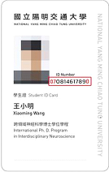

圖書館
語言切換
日文
English
系統登入服務
System Login Service
使用者登入
帳 號
密 碼
登入
修改個人資料
修改密碼
重設密碼
讀者類別
登入帳號
預設登入密碼
讀者類別
交大校區（本籍，含「系統工程與科技學位學程」）
登入帳號
舊證
新證

【舊證】：
條碼號
【新證】
入學取得新證：07＋學號＋
0
舊證更換新證：07＋學號＋
總換證次數（包含舊證更換次數）
預設登入密碼
交大校區（本籍）：國民身份證字號
讀者類別
交大校區（外籍）
登入帳號
舊證
新證
《舊證》：
條碼號
《新證》
入學取得新證：07＋學號＋
0
舊證更換新證：07＋學號＋
總換證次數（包含舊證更換次數）
預設登入密碼
交大校區（外籍）學生
108年入學
學號＋西元出生年月日後３碼（yyyym
mdd
）
109年～入學
學號＋西元出生年月日後１碼（yyyymmd
d
）
交大校區（外籍）教職員
108年～就職
教職員證號+西元出生年月日後３碼（yyyym
mdd
）
讀者類別
陽明校區
登入帳號
國民身份證字號
預設登入密碼
國民身份證字號
讀者類別
清大讀者
登入帳號
教職員生（借書證）上的條碼號（證號），"-" 不必輸入
預設登入密碼
國民身份證字號
讀者類別
中大（學生）
登入帳號
學號＋學生證上尾碼（如：5, 6, 7...以此類推）（共10碼）
預設登入密碼
國民身份證字號
讀者類別
中大（教職員）
登入帳號
身分證字號去尾碼＋教職員證上之英文字母（如：A, B, C...以此類推）（共10碼）
預設登入密碼
國民身份證字號
附註：
有問題請洽交大校區借還書櫃檯（分機52636或52658）
讀者登入個人借閱記錄後可自行修改預設密碼
回到最上